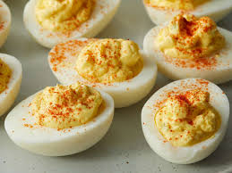

Deviled Eggs

Description
Hardboiled, deviled eggs flavored with garlic and mustard.
Ingredients
- Eggs
- Mayonnaise
- Salt
- Pepper
- Garlic powder
- Ground mustard
- Paprika
Steps
- Boil eggs about 12 minutes or until hardboiled.
- Cool eggs, remove shells.
- Cut eggs in half. Separate yolks from whites of eggs, place into mixing bowl.
- Smash yolks with fork until resembling coarse crumbs.
- Add mayonnaise and mix until creamy.
- Add salt, pepper, garlic powder, and ground mustard to taste.
- Spoon yolk mixture back into empty egg halves.
- Sprinkle with paprika and enjoy.